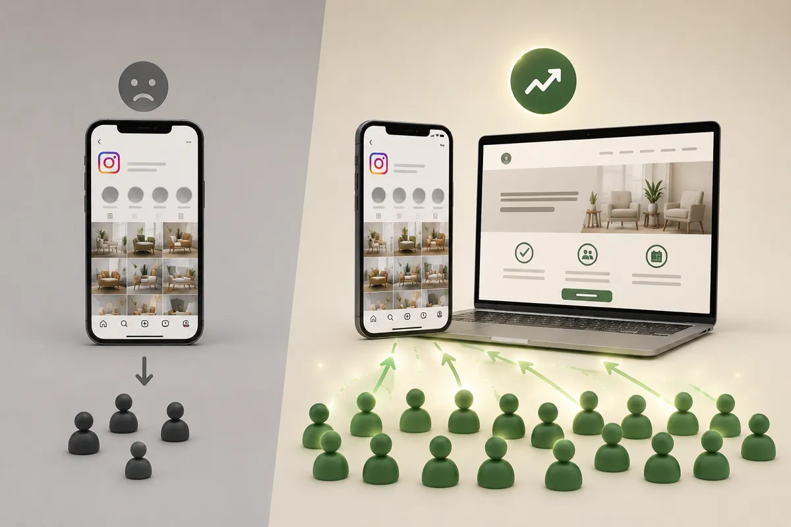

Waarom Instagram geen
vervanging is voor een website
Veel ondernemers denken: ik heb een Instagram, dus een website heb ik niet nodig. Begrijpelijk, maar het kost je klanten. In dit artikel lees je waarom social media en een eigen website twee verschillende dingen zijn, en waarom je ze allebei nodig hebt.

Instagram is geweldig om je werk te laten zien en in contact te blijven met klanten. Maar een Instagram-pagina is geen vervanging voor een website, hoe goed je profiel er ook uitziet. Het zijn twee verschillende gereedschappen met een ander doel. Wie alleen op social media leunt, bouwt zijn bedrijf op geleend terrein. Hieronder leggen we uit waarom dat risicovol is en wat je misloopt.
Je bezit je Instagram-pagina niet
Dit is het grootste punt. Je Instagram-account is van Meta, niet van jou. Het platform bepaalt de regels, het algoritme en wie jouw berichten te zien krijgt. Wordt je account gehackt, geblokkeerd of per ongeluk verwijderd, dan ben je in één klap alles kwijt: je foto's, je volgers en je hele online aanwezigheid. Dat gebeurt vaker dan je denkt. Een website is daarentegen echt van jou. Niemand kan hem zomaar afsluiten.
Je wordt niet gevonden in Google
Als iemand zoekt naar "kapper in de buurt", "fotograaf Noord-Holland" of "website laten maken", verschijnt er bijna nooit een Instagram-profiel bovenaan. Google laat websites zien. Heb je alleen Instagram, dan loop je alle mensen mis die actief op zoek zijn naar wat jij aanbiedt, en dat zijn juist de klanten die klaar zijn om te kopen. Met een website en goede SEO sta je wél in die zoekresultaten.
Je bent overgeleverd aan het algoritme
Op Instagram bereik je maar een fractie van je volgers met elke post. Het algoritme beslist, en dat verandert constant. Je kunt honderden volgers hebben en toch maar een handjevol mensen bereiken. Op je eigen website is er geen algoritme dat tussen jou en je bezoeker in staat. Wie er komt, ziet precies wat jij wilt laten zien, in de volgorde die jij bepaalt.
Een website wekt meer vertrouwen
Een verzorgde website straalt professionaliteit uit op een manier die een social-mediaprofiel niet kan evenaren. Het laat zien dat je je zaken serieus neemt. Klanten verwachten tegenwoordig gewoon dat een echt bedrijf een eigen site heeft met duidelijke informatie: wat je doet, wat het kost, hoe ze contact opnemen en wat anderen van je vinden. Mis je dat, dan ontstaat er twijfel, en twijfel kost klanten.
Op je website stuur je de bezoeker naar actie
Instagram is gemaakt om mensen op het platform te houden en te laten scrollen. Een website is gemaakt om bezoekers naar een doel te leiden: een offerte aanvragen, een afspraak boeken, een product kopen of contact opnemen. Die structuur, met duidelijke knoppen en een logische opbouw, krijg je op een social-mediaprofiel simpelweg niet voor elkaar.
De sterkste aanpak: allebei, slim gecombineerd
Dit is geen kwestie van Instagram óf een website. De winnaars gebruiken beide, en laten ze elkaar versterken:
- Instagram gebruik je om aandacht te trekken, je werk te laten zien en je merk persoonlijkheid te geven.
- Je website is de plek waar je die aandacht omzet in klanten: hier vinden ze alle info en nemen ze contact op.
- Zet de link naar je website prominent in je Instagram-bio.
- Verwijs in je posts en stories regelmatig naar je site voor meer informatie of een offerte.
Zo gebruik je het bereik van social media én de betrouwbaarheid en vindbaarheid van een eigen website. Het een vult het ander aan.
Klaar voor een eigen plek online?
Brand-On is een webdesign studio uit Purmerend, actief in heel Noord-Holland. We bouwen websites die je Instagram-aanwezigheid compleet maken, zodat je niet langer afhankelijk bent van het algoritme. Je werkt direct met de mensen die je site maken, met een heldere prijs en geen verrassingen. Bekijk onze tarieven of laat je inspireren door onze projecten.
Instagram of een eigen website?
Kan ik mijn bedrijf runnen met alleen een Instagram-pagina?
Het kan, maar je loopt veel klanten mis. Op Instagram ben je afhankelijk van het algoritme, je wordt niet gevonden in Google en je bezit het platform niet. Een website is jouw eigen plek waar je altijd vindbaar bent en zelf de regels bepaalt. De sterkste combinatie is Instagram en een website naast elkaar.
Word je met een Instagram-pagina gevonden in Google?
Nauwelijks. Instagram-profielen verschijnen zelden bovenaan in Google voor zoekopdrachten als "kapper in de buurt" of "website laten maken". Een eigen website met goede SEO is wel gericht op gevonden worden door mensen die actief zoeken naar wat jij aanbiedt.
Wat is het verschil tussen Instagram en een website voor mijn bedrijf?
Instagram is geleend terrein waar je aandacht trekt, een website is je eigen terrein waar je vertrouwen wint en klanten overtuigt. Op je website bepaal je zelf de structuur, ben je vindbaar in Google en kun je makkelijk een offerte of afspraak laten aanvragen. Ze versterken elkaar het best samen.
Wat als Instagram morgen mijn account blokkeert?
Dan ben je in een klap je hele online aanwezigheid en al je volgers kwijt. Dat gebeurt vaker dan je denkt, bijvoorbeeld door een gehackt account of een onterechte blokkade. Met een eigen website houd je altijd een plek die van jou is en die niemand kan afsluiten.
Gerelateerde artikelen
Laten we jouw merk
aanzetten.
Wil je zien hoe een website jouw Instagram compleet maakt? Vraag een gratis concept aan, helemaal vrijblijvend. Je krijgt een persoonlijk voorstel binnen één werkdag, zonder verkooppraatje.